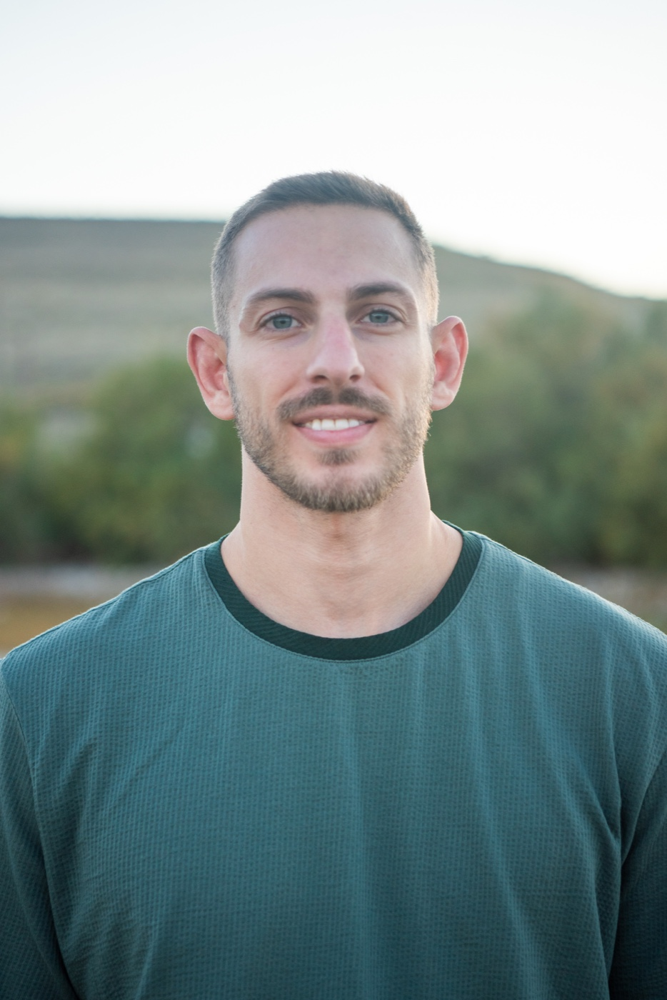

Casey Clark
Combining data & chemical intuition to discover molecules & materials
I’m a PhD candidate in Materials Science at the University of Utah, conducting research at the intersection of organic, polymer, and data chemistry.
My research aims to understand and control how molecular structure and synthesis conditions govern chemical reactivity, polymer behavior, and material properties. I pursue this by combining molecular design, flow chemistry, and Bayesian optimization to explore chemical space and accelerate the discovery of adaptive and programmable polymers.
Additionally, I use density functional theory to study altermagnetism in graphene and amorphous topological insulators in semiconductor-compatible materials.
Research interests
Adaptive & Programmable Polymers
- How can we design polymers that adapt their properties and functions on demand?
- Can we program multiple functions and end-of-life pathways into a single material?
Accelerated Discovery & Data Chemistry
- How can we learn the most chemistry from the fewest experiments?
- How can we efficiently navigate chemical space to discover molecules and materials with targeted properties?
Next-Generation Electronic Materials
- How can local chemical and structural environments give rise to new electronic properties?
- Can we design materials whose electronic functions can be switched on demand?
Education & research
PhD · Materials Science
2025 – present · expected 2028University of Utah
Data-driven molecular and polymer discovery for functional materials.
MS · Physical Chemistry
2023 – 2024University of Oregon
DFT simulations of photocatalytic MOFs embedded with metal nanoparticles.
BS · Biochemistry
2017 – 2022University of Utah
Molecular dynamics simulations to evaluate protein force-field accuracy.
Methods & tools
Experimental Chemistry
- Organic & Polymer Synthesis
- Flow Chemistry
- Characterization
Data Chemistry
- Bayesian Optimization
- Machine Learning
- Design of Experiments
Computational Chemistry
- Density Functional Theory
- VASP
- High-Performance Computing
Publications
KnowMat: An Agentic Approach to Transforming Unstructured Materials Science Literature into Structured Data
Integrating Materials and Manufacturing Innovation (2026)
Evaluating the accuracy of the AMBER protein force fields in modeling dihydrofolate reductase structures
Journal of Biomolecular Structure and Dynamics (2022)